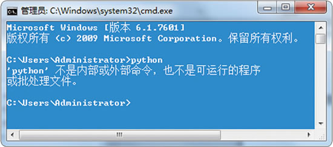
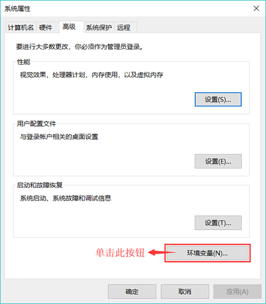
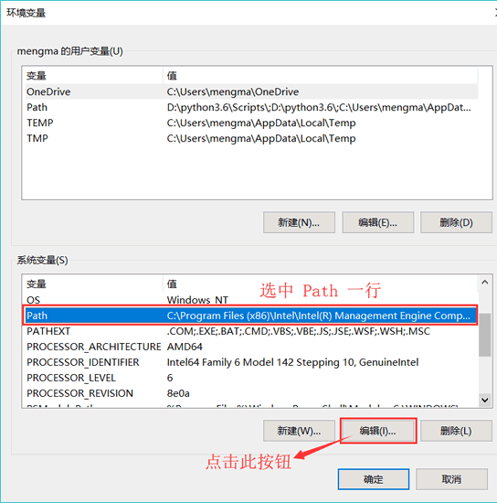
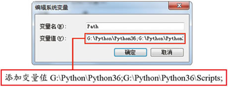

首页 > 编程笔记
python不是内部或外部命令的解决方法
安装 Python 环境没有问题的读者，可直接跳过本节，继续阅读后续文章。
有些读者，在命令行窗口（Linux 称为终端）中输出 python 命令后，却显示“‘python’不是内部或外部命令，也不是可运行的程序或批处理文件”，如图 1 所示：
图 1 输出 python 命令后出错
出现此问题，是因为在当前的路径中找不到 Python.exe 可执行程序，最直接的解决方法就是手动配置环境变量，具体方法如下：
-
在“计算机”图标上单击右键，然后在弹出的快捷菜单中选择“属性”，在属性对话框中单击“高级系统设置”超链接，会出现如图 2 所示的“系统属性”对话框。

图 2 “系统属性”对话框示意图
-
如图 2 所示，单击“环境变量”按钮，将弹出“环境变量”对话框，如图 3 所示：

图 3 “环境变量”对话框
-
在图 3 所示的对话框中，选中“系统变量”栏中的 Path 变量，然后单击“编辑”按钮。此时会弹出“编辑系统变量”的对话框，如图 4 所示：

图 4 “编辑系统变量”对话框
-
正如图 4 所示的这样，我们需要在现有 Path 变量值的最前端，手动添加“G:Python\Python36;G:Python\Python36/Scripts;”，注意，中间和最后的分号不要丢掉，另外将 Python 安装路径修改成自己的，然后单击确定按钮，就完成了对环境变量的设置。
再次强调，不要删除系统变量 Path 中原本存在的变量值，并且其中的分号是英文状态下输出的，否则会产生错误。
本节所介绍的解决方法，是以 Windows 操作系统为例进行说明的，但此方式同样适用于其他的操作系统，只是修改过程略有差异，使用其他操作系统的读者，需要自己找到修改 Path 变量的入口，然后按照此方式修改即可。
关注公众号「站长严长生」，在手机上阅读所有教程，随时随地都能学习。内含一款搜索神器，免费下载全网书籍和视频。

微信扫码关注公众号